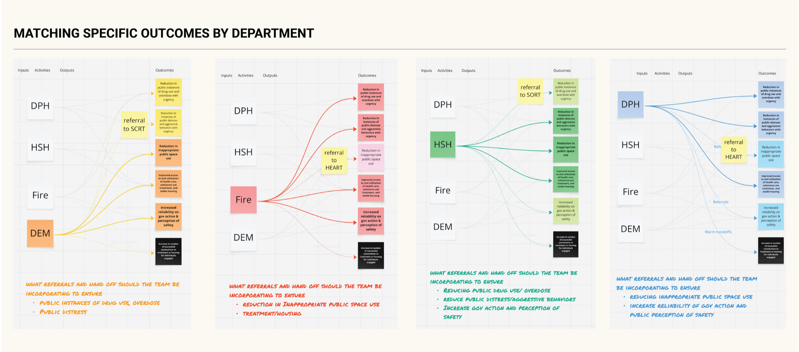

Coordinating care across a fragmented homeless-response system
How I designed ASTRID — a shared, cross-departmental data foundation and three tools — to help San Francisco's most vulnerable residents move from the streets into care.
DomainPublic-sector service & systems design
Timeline2023 – present
RoleDesign Lead
Team4-person team (data scientist, PM, project lead) across 4 city departments
Context
Eight street teams, four departments, no shared view of the client
How do you coordinate care for people experiencing homelessness when multiple city departments work with the same person, none of them can see what the others are doing, and the most vulnerable clients keep cycling through emergency services without ever moving toward stable care?
Eight street-response teams operated across four city departments under overlapping mandates. And the highest-need clients — roughly 10% of the unhoused population, using 50% of all services — kept churning through emergency response without moving toward stable care or housing.
The Problem
Everyone owned a slice of the client; no one owned the outcome
User problem: People living on the streets with complex health, housing, and resource needs had to navigate eligibility rules and team handoffs they could not manage themselves. The highest-need clients were repeatedly left on the streets because no single team could resolve their case end-to-end.
Business problem: Eight street-response teams across four departments operated under overlapping mandates without a shared client view. Each team owned a slice of the same client's journey, and no one owned the outcome across the system, so resources kept getting spent without changing who actually got off the streets.
When I joined the innovation team in 2023, they were solving a data-integration problem. As a service designer, I pushed the team to reframe it: after six weeks of ride-alongs and care-coordination meetings, it was clear the real work wasn't plumbing data together — it was redesigning accountability. Each department was doing its best, but clients needed cross-departmental resources, and no one owned the outcome across teams.
Eight street-response teams across four departments, each owning a slice of the same client's journey. No single team owned the path through.
Research — what I found
30+ ride-alongs, 45+ interviews, one pattern over and over
I ran 30+ ride-alongs across DPH (Public Health), Fire, DEM (Emergency Management), and HSH (Homelessness & Supportive Housing), plus 45+ interviews with field staff and leadership. Wherever possible I used existing open data to examine the cost of services to the city and the systems these teams operated within. The same pattern surfaced again and again.
Ride-alongs mostly ended with clients left on the street for one of four reasons: staff couldn't diagnose the need; the need was diagnosed but the client wasn't eligible; the client was eligible but the resource wasn't available; or the resource was available but the client wouldn't take it.
Theory-of-change workshops
I was working with tough stakeholders who had to buy into taking on more work than regulation required. So I designed and facilitated six workshops, each grounded in real client stories, with leaders from all four departments. The sessions produced the first unified street-response goal jointly held by DPH, Fire, DEM, and HSH — with warm-handoff protocols and named ownership for the transitions nobody had been accountable for before. I also built a logic model mapping each department's inputs, activities, outputs, and outcomes up to that shared top-line goal.

Department-by-department view: how the same outputs map to different referral paths.The working diagram from the theory-of-change workshop.
Service blueprint, built with frontline staff
A service blueprint, built with frontline staff, traced the client journey across four departments and named every owner-less handoff. I built these maps on walls with city leaders so they felt ownership over the artifact, and brought frontline staff into the Mayor's office to share the struggles they face on the streets. The map turned an abstract coordination problem into something city leaders could see in front of them.
Working service blueprint with department leads: mapping entry points, assessment, next steps, and follow-up across teams.
Three users, three needs
The same broken coordination hit three groups differently
A shared view of client data would help — but only if it reached the right person at the right decision. Three groups each needed a different slice of it.
Outreach / field worker
“When I meet a client on the street, I want their history and resource eligibility right there at the point of contact, so I can act instead of starting from zero.”
Needs to know who has worked with this client before, and what they're eligible for.
Has little in-the-moment decision power — the real call happens a level up.
Manager / command lead
“When a frontline worker calls me about a client, I want to make the coordination and resourcing decision across departments, so the right resource actually gets reserved.”
This is where field decisions actually get made.
Needs to see the client across departments to prioritize and assign owners.
Mayor's office / policy
“When I set policy and answer for outcomes, I want the operational picture across departments and defensible numbers, so I can direct resources and show progress.”
Needs what activities teams run, what outcomes follow, and how to measure impact.
Needs numbers that hold up under public and funder scrutiny.
The Foundation
ASTRID — and the legal trust that made it lawful
ASTRID is the integrated, cross-departmental dataset — the plumbing. It brings each department's slice of a client into one shared view, so the same person is finally legible across teams that had never been able to see one another's records.
But before a single field could be joined, the sharing had to be lawful. Client information between city departments runs into privacy law: HIPAA, plus a federal rule protecting substance-use records. I drafted the first version of the legal agreement that would let departments share lawfully; the data lead and the City Attorney's office finalized it.
The result is the Homeless Multidisciplinary Data Trust (HMDT) — a reusable legal framework and one-time setup that future city projects reuse instead of starting from scratch. It's the invisible infrastructure that makes everything downstream possible: legal groundwork that keeps paying off long after this project.
Reusable infrastructure
Once we integrated the data, a two-week working session in September 2024 brought data stewards from across departments together to iterate on the dataset in real time. It produced more than a dataset — it built working relationships between department data leads that later Mayor's Office of Innovation engagements still draw on.
The Interventions
Three tools, three deliberately different fidelities
On top of the ASTRID foundation I built three tools — each at a deliberately different fidelity, matched to its user and the decision it had to support. The point wasn't to polish everything equally; it was to invest craft where the decision actually happens.
Product
Policy-maker dashboard
UserMayor's office & execs
FidelityHigher-fidelity, ongoing
What it does: Gives the Mayor's office a high-level picture of the activities teams run, the outcomes those activities produce, and the impact across departments.
Why: Policy and resourcing decisions are made here, in public, under scrutiny — so the surface is ongoing and built to last.
Product
Outreach-worker tool
UserField outreach workers
FidelityRapid prototype (days)
What it does: Surfaced cross-departmental client data — history, eligibility, prior contacts — at the point of contact in the field.
Why: Built in days with Lovable, its job was to test a hypothesis, not to ship a polished product. The use patterns did the arguing.
Service design
Shared Priority List
UserWeekly cross-dept meeting
FidelityProcess / artifact, not UI
What it does: The working list of the highest-acuity clients, worked through weekly against 5 structured prompts: next steps, coordination, required resources, measuring success, and case review.
Why: The value is the coordination ritual, not a polished app — so it stayed a service.
Policy-maker dashboard
The high-level dashboard gave the Mayor's office a more detailed picture of operations across departments — what activities teams were running, what outcomes those produced, and how to measure impact.
Rapid Access to Cross-Departmental Client Data: the manager-facing dashboard now central to the Lurie Administration's Neighborhood Street Teams.
Outreach-worker tool
The outreach-worker tool put integrated client data — history, resource eligibility, and prior contacts — in field workers' hands, on the assumption it would help them act faster. Testing disproved that: field workers have little in-the-moment decision power, so the primary user shifted to their managers.
The Response Team's tool surfaced cross-departmental client data at the point of contact.
Shared Priority List
The Shared Priority List is the working list of clients with the highest cross-departmental encounters and the most complex resource and health needs — people street teams have seen repeatedly for six months or longer with no visible change. It let four departments agree on who needed coordinated care most, ending the recurring debate over whose clients mattered. Before it, coordination meetings ran long and open-ended; I added a structured template of five prompts, so every weekly review covered the same ground for every client.
The Shared Priority List working session that produced the structured prompts. Sticky-note responses from department leads working through one client together.Shared Priority List client view: the structured prompts the weekly coordination meeting works through.
The Fidelity Decision
Fidelity followed the decision, not the user closest to the street
The field tool was built fast and low-fidelity on purpose — to test, and ultimately disprove, the assumption that putting data in field workers' hands would let them act faster. It turned out they had little decision power in the field; the decisions lived with managers. So I invested higher fidelity in the manager and policy surfaces, and kept the Shared Priority List a service, not an app.
Impact
What the integrated system did that seven disconnected ones couldn't
Across 15 of the highest-acuity clients in a four-month pilot cohort — deliberately small: focused enough for frontline staff to give each client real attention, large enough for breakdowns to surface.
2/3of the 15 highest-acuity pilot clients moved into housing, shelter, treatment, or case management within four months
0deaths and overdoses in the pilot cohort
−50%hospital transports
ASTRID is now the operational backbone of Mayor Lurie's Neighborhood Street Teams model.
Cited as foundational in the March 2025 Executive Directive on homelessness.
Selected for a 3-year, $7M Bloomberg Philanthropies partnership — the largest grant ever awarded to a city innovation office.
16,000unhoused San Franciscans served
125,000street encounters integrated across departments
7 depts · 120+ usersASTRID 2.0 now spans all seven city departments
Learnings
What I'd carry forward
01
Reframing from data integration to accountability was the real unlock. The plumbing mattered, but the leverage came from asking who owned the outcome — not which datasets to merge.
02
Getting leaders to co-build the artifact on the wall created ownership. When department chiefs drew the blueprint themselves, they bought into using it.
03
Match tool fidelity to where the decision actually happens. A fast, disposable prototype in the field was worth more than a polished app aimed at people who couldn't act on it.
04
Legal groundwork is reusable infrastructure, not overhead. The HMDT was a one-time cost that every future cross-department project can now build on.